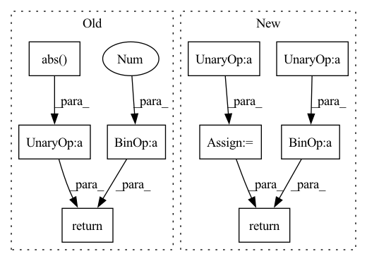

Pattern ID :13596

Before Change
x += fuzz
x /= (1 + 2 * fuzz)
return np.log(x) - np.log(1 - x), -np.log(np.abs(x - x ** 2))
def sigmoid(x, fuzz=1e-2):
After Change
if fuzz:
x += fuzz
x /= (1 + 2 * fuzz)
log_j = -np.log(x) - np.log1p(-x)
if fuzz:
log_j -= np.log(1 + 2 * fuzz)
return np.log(x) - np.log1p(-x), log_j
def sigmoid(x, fuzz=1e-12):
In pattern: SUPERPATTERN
Frequency: 3
Non-data size: 9
Instances
Fragment ID: 45700601
Project Name: mj-will/nessai
Commit Name: efd0febbb8dabbe6855b918f21169437664f3acc
Time: 2021-08-23
Author: m.williams.4@research.gla.ac.uk
File Name: nessai/utils/rescaling.py
M Class Name: AnonimousClass
N Class Name: AnonimousClass
M Method Name: logit(2)
N Method Name: logit(2)
M Parent Class:
N Parent Class:
M File Name: nessai/utils/rescaling.py
N File Name: nessai/utils/rescaling.py
M Start Line: 284
M End Line: 286
N Start Line: 292
N End Line: 298
'>
Before Change
def huber_loss(x, delta=1.0):
// https://en.wikipedia.org/wiki/Huber_loss
return tf.where(
tf.abs(x) < delta,
tf.square(x) * 0.5,
delta * (tf.abs(x) - 0.5 * delta)
)
After Change
def huber_loss(input, target, delta=1.):
// type: (Tensor, Tensor, float) -> Tensor
// https://en.wikipedia.org/wiki/Huber_loss
t = torch.abs(input - target)
return torch.where(
t < delta, 0.5 * t ** 2,
t * delta - (0.5 * delta ** 2)
)
def sample_n_unique(sampling_f, n):
'>
Fragment ID: 45700667
Project Name: erfanmhi/deep-reinforcement-learning-cs285-pytorch
Commit Name: 5311fe388264d564443693329dbacf832ed6d349
Time: 2020-08-24
Author: mhi.erfan1@gmail.com
File Name: hw4/cs285/infrastructure/dqn_utils.py
M Class Name: AnonimousClass
N Class Name: AnonimousClass
M Method Name: huber_loss(3)
N Method Name: huber_loss(2)
M Parent Class:
N Parent Class:
M File Name: hw4/cs285/infrastructure/dqn_utils.py
N File Name: hw4/cs285/infrastructure/dqn_utils.py
M Start Line: 141
M End Line: 145
N Start Line: 219
N End Line: 226
'>
Before Change
def huber_loss(x, delta=1.0):
// https://en.wikipedia.org/wiki/Huber_loss
return tf.where(
tf.abs(x) < delta,
tf.square(x) * 0.5,
delta * (tf.abs(x) - 0.5 * delta)
)
After Change
def huber_loss(input, target, delta=1.):
// type: (Tensor, Tensor, float) -> Tensor
// https://en.wikipedia.org/wiki/Huber_loss
t = torch.abs(input - target)
return torch.where(
t < delta, 0.5 * t ** 2,
t * delta - (0.5 * delta ** 2)
)
def sample_n_unique(sampling_f, n):
'>
Fragment ID: 45700605
Project Name: erfanmhi/deep-reinforcement-learning-cs285-pytorch
Commit Name: 4646702c3aa2ad6dc2656c704ee22b25b558e3ee
Time: 2020-08-16
Author: mhi.erfan1@gmail.com
File Name: hw3/cs285/infrastructure/dqn_utils.py
M Class Name: AnonimousClass
N Class Name: AnonimousClass
M Method Name: huber_loss(3)
N Method Name: huber_loss(2)
M Parent Class:
N Parent Class:
M File Name: hw3/cs285/infrastructure/dqn_utils.py
N File Name: hw3/cs285/infrastructure/dqn_utils.py
M Start Line: 141
M End Line: 145
N Start Line: 219
N End Line: 226